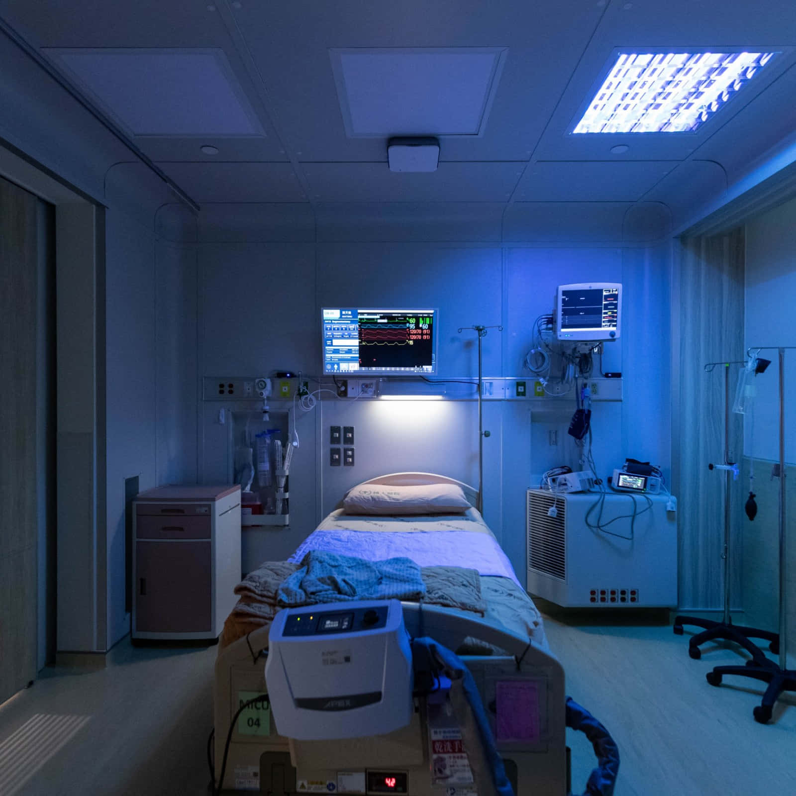

ARCHIVE » PERSONAL » RESTRICTED ACCESS
DATE: 28 Aug 1998 02:47
It was during my sister’s surgery. A minor complication, they said. Nothing to worry about. Yet, as I sat in the waiting room, the unease inside me swelled like a tide I couldn’t hold back. Hours passed. When the surgeon finally emerged, he wore exhaustion like a second skin. Their equipment had failed, he explained, so they switched to backups to finish the procedure.
I visited her later, expecting relief. Instead, I found her surrounded by humming machines – glowing promises of precision. But her breathing wasn’t right. Too shallow, too slow. I pointed it out to the nurse. She waved me off. "It’s within the expected range," she said, eyes glued to the monitor, never once looking at my sister.
I stayed through the night, watching, listening. Her breaths faltered, then stopped entirely. The alarms blared. The staff rushed in, a storm of panic and protocols. I shouted at them to check the calibration of their machines, to stop trusting what was spoon-fed to them. But they didn’t listen. They couldn’t hear me over the screaming of their routines.
And when it was over, and she was gone, the machines fell silent too. Later, I learned the truth: a minor miscalibration in the backup equipment. A difference so small, it should have been caught – would have been caught if they had thought to question what their screens told them.
The ███████ That was the day I saw the invisible cage that surrounds us all. The doctors, the engineers, the programmers – the so-called brightest minds – they’re all prisoners, shackled by their routines and their blind faith in systems. They think they’re free, but they’re just rats running through mazes they can’t even see.
I spent weeks drowning in anger and despair, spiraling deeper into the questions no one else dared to ask. Why don’t they see it? Why don’t they look beyond what they’re told? At first, I thought the answer was ignorance. But it’s not. It’s fear. Fear of breaking the mold, fear of discomfort, fear of the unknown.
That fear disgusted me. It still does.
The ███████ project isn’t about biological computing anymore. It’s about shattering the illusions. It’s about showing people the bars of their cages and forcing them to confront the fact that they’ve been crawling on their knees their entire lives. They’ll call me mad, a destroyer, a villain. But what they call madness, I call clarity. What they see as destruction, I see as rebirth.
Madness isn’t a flaw. It’s a gift. A sharp edge that slices through the layers of lies, cutting straight to the truth.
Like a webpage with its visible and hidden elements, the world operates on two levels: what you see and what’s buried beneath. Most people only look at the surface. They don’t think to explore the code beneath, to ask why the page looks the way it does. They accept the world as it’s presented to them.
But not me. I see the cracks in the system, the hidden flaws. I see what they refuse to see. The truth isn’t on the surface; it’s buried deep inside. And sometimes, to break free, you have to look where no one else is willing to. Beneath the words. Beyond the numbers. Inside the page.
The question isn’t whether the system should be broken. The question is: how many cages need to shatter before people realize they were never locked at all?

"The world around you is a construct, bound by unseen rules. To break free, you must learn to see beyond the illusion, where reality is shaped by the invisible." - █████ █████████
Look closer at the image in the code. Not everything is as it seems.